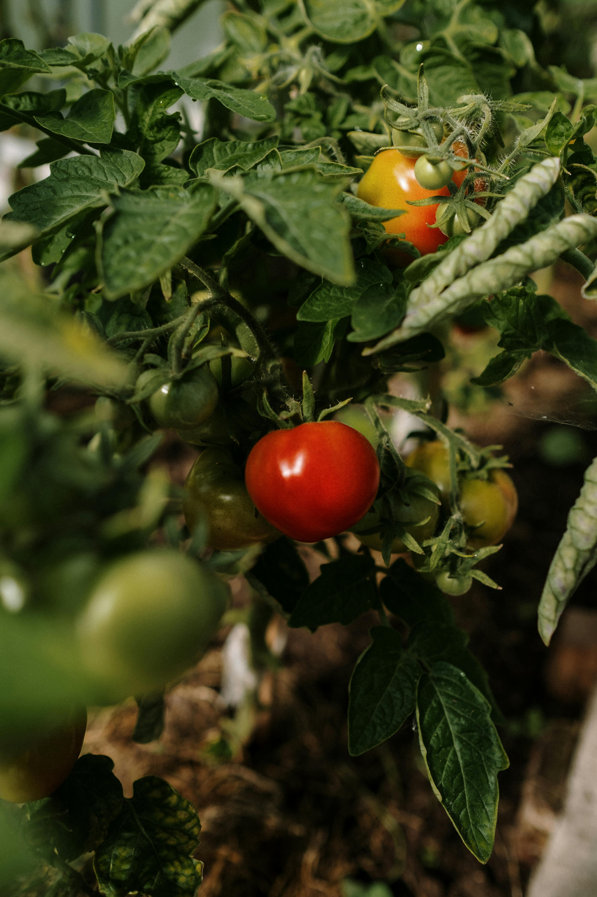

Our Expert Services
We offer a wide range of services to help you maximize your agricultural output and ensure the health of your crops.

Plant Leaf Disease Detection
Identify plant leaf diseases quickly and accurately with our advanced AI-driven technology.

Pesticide Detection
Ensure safe pesticide levels in your crops with our precise detection services.

Crop Recommendation
Get personalized crop recommendations tailored to your land's specific conditions.